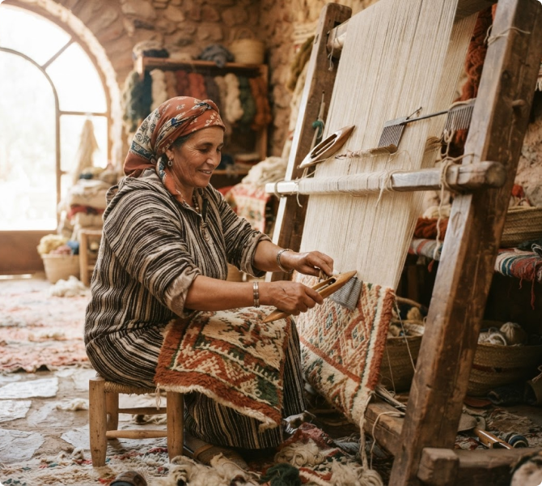
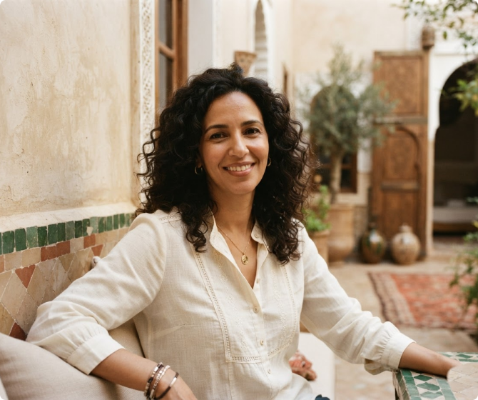
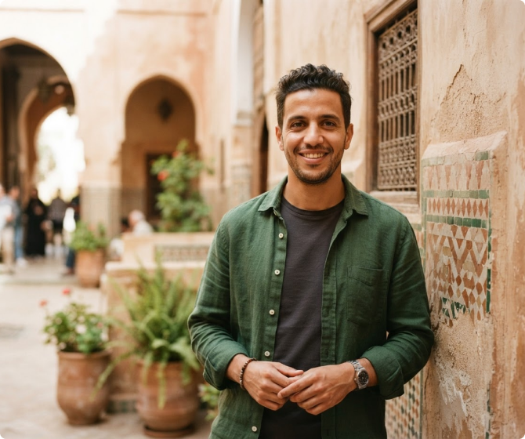
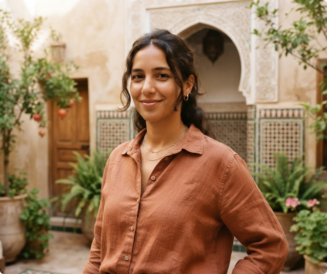

Relier les mains.
Faire vivre les héritages.
Nous sommes une association marocaine convaincue que la richesse de l'artisanat se mesure autant dans les objets que dans les liens qu'il crée.
Depuis 2018, Taawon accompagne les coopératives pour rendre leurs savoir-faire plus visibles, faciliter les rencontres et transmettre un patrimoine vivant. Notre rôle: racontrer, relier et soutenir, au plus près des territoires.

Trois convictions, un même engagement.
La solidarité
Faire ensemble plutôt que chacun de son côté. Nous créons des liens durables entre les coopératives, leurs territoires et les personnes qui partagent notre engagement.
L’authenticité
Respecter la singularité de chaque atelier. Nous mettons en valeur les matières locales, les gestes et les récits, sans effacer ce qui les rend uniques.
La transmission
Donner aux savoir-faire un avenir. Nous soutenons le partage entre générations et la place des jeunes dans les métiers artisanaux.
Un impact à hauteur humaine.
Repères du réseau Taawon en 2026. Derrière chaque chiffre, une histoire collective.
coopératives accompagnées
coopératives accompagnées
régions représentées
filières artisanales
L'entraide, année après année.
La première rencontre
Naissance de Taawon à Rabat, à l’initiative d’un collectif engagé pour l’artisanat.
Les premiers liens
Dix coopératives rejoignent le réseau, dont Terres de Tamegroute.
De nouveaux territoires
Le réseau rassemble 30 coopératives et développe des rencontres autour de la transmission.
Un élan partagé
48 coopératives et 720 artisanes et artisans font vivre l’aventure dans 12 régions.
Une équipe, sur le terrain.
À l’écoute des ateliers et des territoires, nous faisons le lien entre les envies, les besoins et les possibles.

Salma Bennani

Mehdi El Idrissi
